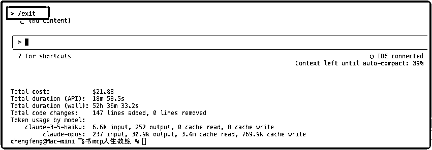
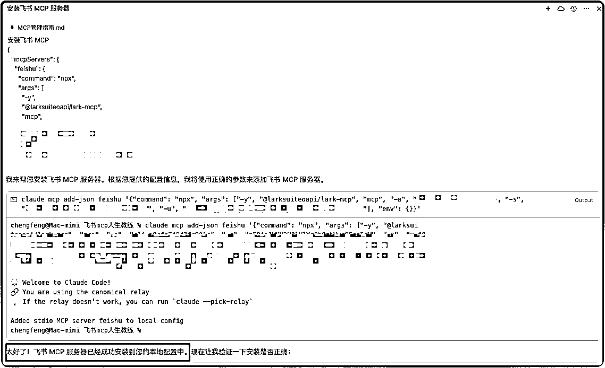
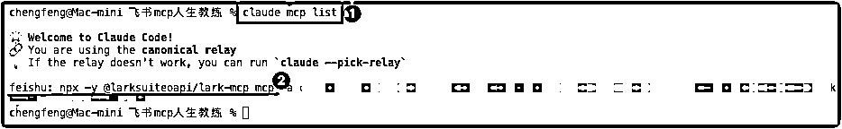
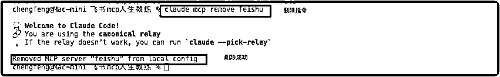
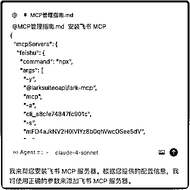

来源：https://o90p05z3t4.feishu.cn/docx/IbqKdR5Dwoc8TFxgJNHcnIVdnKl
上周五晚上11点，我还在对着屏幕发呆。
"这个 MCP 到底怎么装啊？claude code，全是报错！"
因为飞书MCP的用户密钥会过期，所以需要修改 MCP配置，真的气死了。
我不信邪，继续死磕。凌晨2点，当我终于看到飞书 MCP 修改成功的提示时，差点激动得跳起来。
但你知道最讽刺的是什么吗？
解决方案其实只需要一句话：MCP 必须在 Claude Code 外面装。
文章末尾有 mcp使用的终极技巧！
几乎所有人第一次安装 MCP 都会这样做：
# ❌ 错误示范 > claude mcp add feishu --app-id xxx AI执行一通，然后没依旧没有安装
为什么会这样？因为你在 Claude Code 对话界面里执行了系统命令。
这就像你在微信聊天框里输入"关机"，然后期待电脑会关机一样。Claude Code 对话界面和系统终端是两个完全不同的世界。
记住这个黄金法则：MCP 的安装必须在 Claude Code 外部进行。
任何MCP操作，都要先退出 Claude Code
退出命令： /exit

MCP 的安装命令确实复杂，比如：
claude mcp add-json feishu '{
"command": "npx",
"args": ["@larksuiteoapi/lark-mcp", "mcp", "-a", "APP_ID", "-s", "SECRET"]
}'
看到这种命令，谁不头大？这比当年背化学元素周期表还难。
我发现了一个绝妙的方法：把参数告诉 Cursor，让它帮你生成完整命令。
步骤1：在 Cursor 中描述需求
安装飞书 MCP
{
"mcpServers": {
"feishu": {
"command": "npx",
"args": [
"-y",
"@larksuiteoapi/lark-mcp",
"mcp",
"-a",
"cli_a8cfe74****",
"-s",
"mFO4aJkNV2****",
"-u",
"u-f0Hf3****"
],
"env": {}
}
}
}
命令参考：claude mcp add-json feishu '{
"command": "npx",
"args": ["@larksuiteoapi/lark-mcp", "mcp", "-a", "APP_ID", "-s", "SECRET"]
}'
步骤2：Cursor 的Agent模式，会执行你的安装请求
这样你就不用记那些复杂的 JSON 格式了，直接复制粘贴执行即可。

列出所有服务器
claude mcp list

claude mcp remove <要删除的mcp名称>

看到这里，你可能还是觉得这些命令很繁琐。
我要告诉你一个好消息！
我把所有常用 MCP 服务的安装命令、配置参数、排错方法，全部整理成了一份《MCP 安装指令文档》。
这份文档的特别之处：
超级简单的三步：
1. 在 Cursor 里，粘贴我的提示词文档
新建文件夹，命名为“mcp指南.md”,然后粘贴下文的提示词
# MCP 安装配置指令文档
> 🤖 专为 AI 助手设计的 MCP 操作指令集
## 基础环境检查
```bash
# 检查 Claude Code 是否安装
claude --version
# 检查当前 MCP 服务状态
claude mcp list
# 检查特定服务详情
claude mcp get <服务名>
```
## MCP 服务管理命令
### 添加服务
```bash
# 基础添加命令
claude mcp add <服务名> <命令路径> [参数...]
# 带环境变量添加
claude mcp add <服务名> <命令路径> -e KEY1=value1 -e KEY2=value2
# JSON 配置添加（推荐复杂配置）
claude mcp add-json <服务名> '{"command": "命令", "args": ["参数1", "参数2"], "env": {"KEY": "value"}}'
# 指定作用域添加
claude mcp add -s local <服务名> <命令> # 仅当前项目
claude mcp add -s project <服务名> <命令> # 项目共享
claude mcp add -s user <服务名> <命令> # 全局用户
```
### 服务操作
```bash
# 查看所有服务
claude mcp list
# 查看服务详情
claude mcp get <服务名>
# 删除服务
claude mcp remove <服务名>
# 重置项目选择
claude mcp reset-project-choices
```
## 常用 MCP 服务配置
### 飞书 MCP
```bash
claude mcp add-json feishu '{
"command": "npx",
"args": [
"@larksuiteoapi/lark-mcp", "mcp",
"-a", "APP_ID_HERE",
"-s", "APP_SECRET_HERE",
"-u", "USER_TOKEN_HERE"
],
"env": {}
}'
```
## 项目配置文件模板
### .mcp.json 文件格式
```json
{
"mcpServers": {
"service-name": {
"command": "/path/to/command",
"args": ["arg1", "arg2"],
"env": {
"ENV_VAR": "value"
}
}
}
}
```
## 安装操作流程
### 标准安装流程
1. 退出 Claude 会话（如果正在运行）
2. 在系统终端执行 MCP 安装命令
3. 验证安装：`claude mcp list`
4. 重新启动 Claude：`claude`
5. 测试服务：在 Claude 中使用 `/mcp` 命令
## AI 助手操作指南
当用户需要安装 MCP 服务时，请：
1. **确认需求**：询问用户想要安装什么类型的 MCP 服务
2. **收集参数**：获取必要的配置信息（API Key、数据库连接等）
3. **生成命令**：根据上述模板生成具体的安装命令
4. **提供流程**：提醒用户按照标准安装流程操作
5. **验证测试**：指导用户验证安装是否成功
操作手册会及时更新，获取最新文档，可以入群
2. 告诉 Cursor 你的需求，并且拉动文件到对话框
@mcp指南.md 安装飞书 MCP：详情

3. Agent自动执行
Cursor 会自动读取文档模板，生成正确的命令，甚至可以帮你自动执行
这样，你再也不用记那些复杂的命令格式了。就像有了一个随时待命的 MCP 安装助手。
1. MCP 必须在 Claude Code 外部安装（最重要！）
2. 用 /mcp 命令验证安装状态
3. 让 AI 帮你生成复杂的命令
4. 使用我的指令文档，一劳永逸